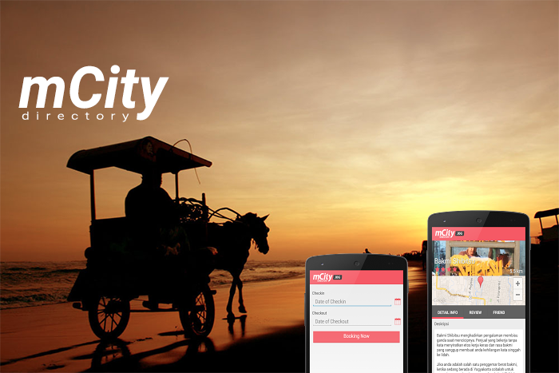
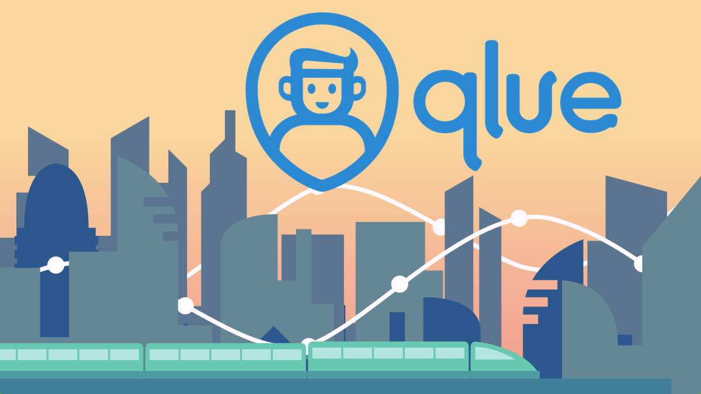
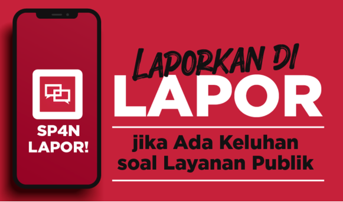
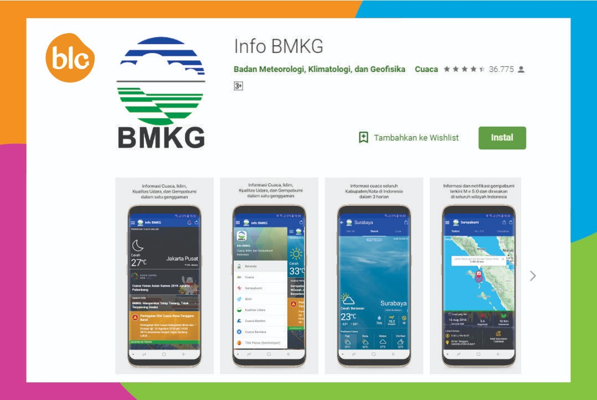

Setelah mengikuti materi pada pertemuan ke-5 ini mahasiswa mampu mengetahui berbagai macam aplikasi komputer yang banyak digunakan berbagai instansi pemerintah, termasuk fungsi dan kegunaannya.
Pesatnya perkembangan teknologi internet sangat berpengaruh terhadap pola hidup masyarakat. Hadirnya teknologi internet semakin memudahkan masyarakat dalam berbagai macam aktifitas. Bidang pemerintahan dalam hal ini pemerintah sudah menggunakan teknologi untuk mempermudah masyarakat mengenal dan terutama pemanfaatan teknologi dibuat guna melayani masyarakat secara luas. Dengan menggunakan teknologi sebagai alat pengolahan data, pemerintah dapat mengolah data seperti data penduduk, kesehatan, tenaga kerja, dan sebagainya. Pemerintah menggunakan komputer untuk menangani masalah administrasi.
Berbagai usaha dilakukan pemerintah untuk memperbaiki sistem pelayanan diberbagai sektor. Pemerintah tidak ingin ketinggalan untuk memanfaatkan perkembangan komputer cukup signifikan. Pemanfaatan media komputer pada pemerintahan sangatlah mempengaruhi kinerja dalam pengolahan data-data. E-government merupakan aplikasi yang diluncurkan pemerintah untuk melayani masyarakat secara online. Aplikasi ini memungkinkan pelayanan publik terjadi begitu intens karena bersifat online. Penyederhanaan birokrasi terjadi karena untuk menyampaikan ide, keluhan masyarakat tidak harus mengantri. Terjadinya komunikasi yang dilakukan pada warga dengan pemerintah ataupun sebaliknya, adanya peningkatan efisiensi pada suatu organisasi, tentunya dapat menghemat pembayaran pajak. Layanan public online merupakan salah satu hasil dari penerapan e-government. Masyarakat dengan mudahnya melaporkan suatu keluhan ataupun keresahan yang terjadi pada lingkungan.
Sejak tahun 1995 e-government sudah mulai diterapkan contohnya Bina Graha Net yang berada di Istana Negara, lalu muncullah website instalasi kepemerintahan. Inpres Nomor 3 Tahun 2003 adalah awal dari peningkatan perkembangan e-government. E-government meningkat secara signifikan tidak hanya pada pemerintahan pusat namun pemerintahan daerah saat ini sudah mulai menggunakannya.
E-government dapat didefinisikan sebagai pelayanan pemerintahan yang menggunaan teknologi digital dengan tujuan untuk meningkatkan efektifitas dan efisiensi dalam penyampaian layanan.
Tujuannya adalah untuk meningkatkan mutu pelayanan kepada masyarakat luas terkait proses administrasi Negara atau keperluan lain-lain. Dalam rangka untuk meningkatkan kualitas pelayanan tersebut terdapat beberapa tujuan yang akan tercapai :
Perkembangan aplikasi di negara maju sangat cepat. Cepatnya perkembangan aplikasi komputer tersebut sudah mulai menimbulkan masalah untuk negara-negara tersebut sehingga hal tersebut merupaka hal serius sehingga diperlukan perhatian khusus untuk menangani hal tersebut. Berbeda dengan Indonesia yang perkembangannya cukup pelan dan belum menimbulkan masalah yang butuh penanganan khusus. Pemicu utama perkembangan e-government menurut sejarahnya ada tiga konsep, yaitu :
Ketiga aspek tersebut merupakan tekanan yang dilakukan oleh masyarakat pada pemerintah agar dapat memperbaiki kinerjanya yang lebih signifikan, dengan adanya teknologi.
Strategi pada e-government dikerjakan dalam 6 strategi, diantaranya :
Beberapa contoh aplikasi yang menunjang administrasi pemerintah dan sukses memberikan pelayanan maupun informasi yang berguna bagi masyarakat, antara lain :
Aplikasi mCity adalah sebuah aplikasi mengenai informasi suatu kota yang bisa diakses melalui smartphone. Wisatawan dapat mencari tahu tentang kota tujuan dengan bantuan aplikasi mCity. Singkatnya, aplikasi ini dapat diartikan sebagai penunjuk jalan serta pemberi informasi mengenai suatu kota. Informasi lengkap mengenai kota tersebut seperti info tentang kuliner, tempat wisata, hingga penginapan.
Aplikasi yang digunakan oleh pemerintah di DKI Jakarta yang diluncurkan pada desember 2014. Aplikasi ini memudahkan masyarakat untuk menginformasikan kerusakan fasilitas, keluhan dan sebagainya. Selain itu masyarakat dapat mengupload foto jika ada masalah yang terjadi di suatu lingkungan masyarakat tersebut berada.
Aplikasi Lapor! merupakan sarana untuk menyampaikan aspirasi serta pengaduan dari masyarakat yang berbasis media sosial. Proses penanganan keluhan pada aplikasi ini dapat dipantau dan diawasi oleh publik. Selain untuk menyampaikan laporan, aplikasi ini juga terdapat fitur dialog virtual antara pemerintah dan masyarakat.
Aplikasi ini dibuat dan digunakan oleh BMKG (Badan Meteorologi, Klimatologi, dan Geofisika). Pada aplikasi ini kita bisa melihat perkiraan cuaca, analisis iklim, dan informasi terjadinya gempa di seluruh kabupaten dan kota di Indonesia. Aplikasi ini juga akan memberikan notifikasi jika gempa yang terjadi berpotensi tsunami. Aplikasi inipun memuat press release jika ada himbauan ataupun pernyataan resmi dari pihak BMKG.
Aplikasi ini dibuat dan digunakan oleh BPOM (Badan Pengawas Obat dan Makanan). Dalam keterangannya di Playstore, pada aplikasi ini masyarakat bisa mengecek suatu produk menggunakan Kode QPR ataupun Kode Batang. Dalam aplikasi ini masyarakat bisa juga menyampaikan aduan terhadap suatu produk kepada BPOM.
Transparansi dalam memberikan informasi kepada masyarakat merupakan faktor yang dapat meningkatkan kepercayaan masyarakat terhadap sebuah lembaga. Transparansi dalam menjalankan fungsi sebuah lembaga serta transparan dalam memberikan informasi kepada masyarakat sangat penting karena masyarakat berhak untuk mengetahui suatu kebenaran. Sebagai jembatan informasi antara suatu lembaga dengan masyarakat maupun antara lembaga, posisi humas suatu lebaga di pemerintahan sangatlah penting. Beberapa tugas penting humas suatu lembaga menurut yang dikutip oleh Amalia (2012):
Joice J Gordon mengartikan humas seharusnya berperan khusus yang berfungsi untuk menjaga dan mempertahankan hubungan yang baik antara pemerintah dengan masyarakat. Berikut tugas humas yang dijelaskan Gordon:
Berikut ini adalah beberapa isu sosial dan masalah yang muncul dari penerapan sistem eGovernment.